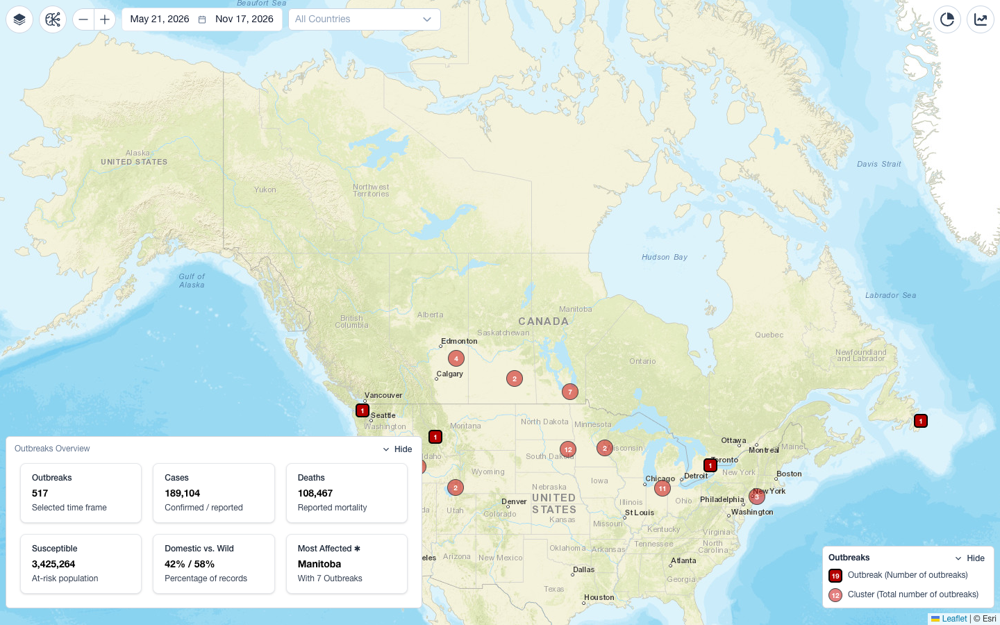

Live dashboard preview

Decision support system · 2026
Avian Influenza Monitoring & Prediction System
A public platform integrating harmonized metadata, descriptive surveillance analytics, and insights into future outbreak risk.